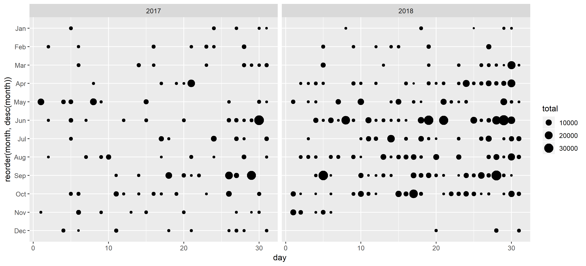
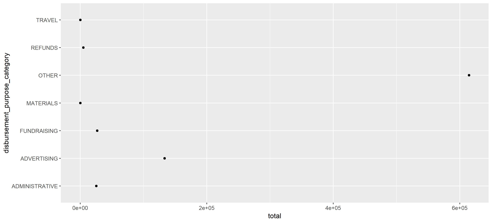

These functions covers itemized data. Want to who has been donating large amounts of money to candidates? Where they live? What about how committees are spending money? Who are the outside spenders?
As shown in these examples, the tidyusafec suggested workflow is to pipe (%>%) the results of a function with the search_ prefix into a function with the get_ prefix.
All itemized data is tied to a committee_id.
get_itemized_contributions How much individual donors gave, when they gave, their names, where they’re from, what they do for work. Alias: get_schedule_a.get_itemized_distributions How campaigns spent their money, who they paid, what for, and when. Alias: get_schedule_b.get_itemized_loans Transactions involving loans made by candidates or others and details about the transactions. Alias: get_schedule_c.get_itemized_debts Debts owed. Alias: get_schedule_d.get_independent_expenditures Look at outside spending. What committees, their names, when they spent, what they bought, etc. Alias: get_schedule_e.get_party_expenditures Look at party expenditures on behalf of candidates. Alias: get_schedule_f.candidates <- search_candidates(election_year = 2018, office = "H", state = "MI", district = "06", candidate_status = "C")
itemized_contributions <- candidates %>%
filter(str_detect(name, "UPTON")) %>%
get_itemized_contributions()
itemized_contributions %>%
filter(is_individual == TRUE,
is.na(memo_code)) %>%
group_by(contribution_receipt_date) %>%
summarise(total = sum(contribution_receipt_amount)) %>%
mutate(year = lubridate::year(contribution_receipt_date),
month = lubridate::month(contribution_receipt_date, label = TRUE),
day = lubridate::day(contribution_receipt_date)) %>%
ggplot() +
geom_point(aes(x = day, y = reorder(month, desc(month)), size = total)) +
facet_wrap(~year)
candidates <- search_candidates(election_year = 2018, office = "H", state = "VA", district = "05", candidate_status = "C")
itemized_disbursements <- candidates %>%
filter(str_detect(name, "COCKBURN")) %>%
get_itemized_disbursements()
itemized_disbursements %>%
filter(is.na(memo_code)) %>%
group_by(disbursement_purpose_category) %>%
summarise(total = sum(disbursement_amount)) %>%
ggplot() +
geom_point(aes(y = disbursement_purpose_category, x = total))